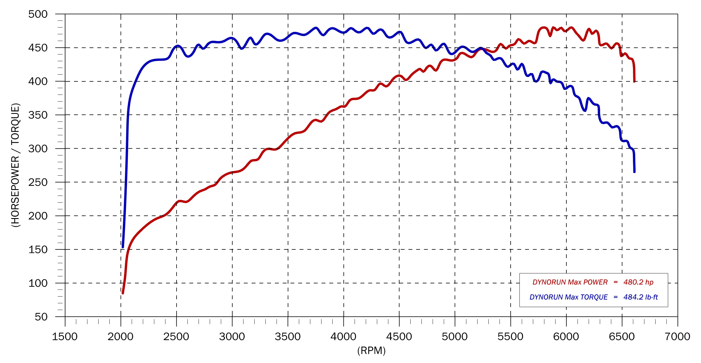
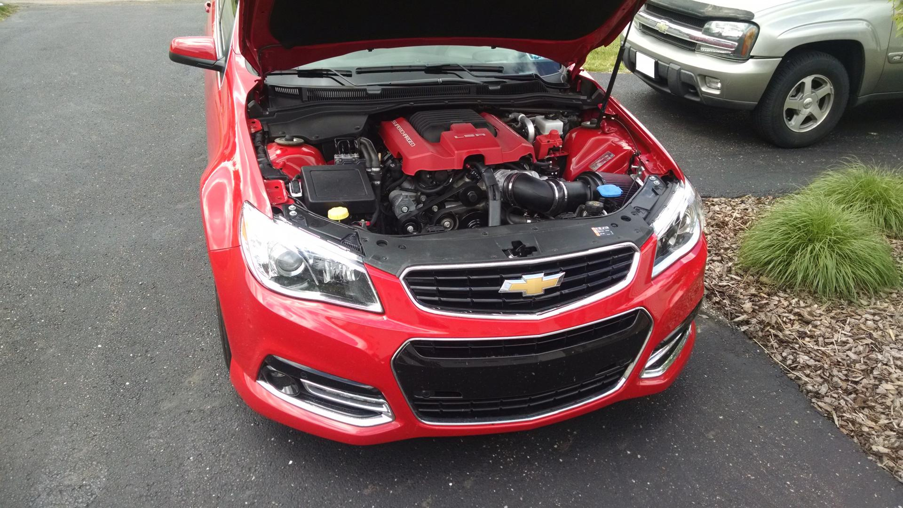

Hello, everyone! My name is Stephen Mann and this is the website I have built from scratch. It is almost always a work-in-progress as I'm always thinking of new things to add or change. Feel free to cycle through the tabs to navigate this website and learn more about me.
I first started this website while I was unemployed in order to pursue something I've always been interested in learning and to teach myself new coding techniques. I wanted to challenge myself, so I didn't want to utilize any websites - Wordpress, Wix, etc - that would end up doing most of the work for me. Development began in a .txt file out of Notepad, then saving-as an .html file and opening that file in a browser to check to see if everything was done properly. This proved rather tedious as you can imagine, so I quickly swapped over to utilizing the text editor program, Atom. It did everything I needed and made things easier with its layout and overall visualization of the different parts of the code.
If you notice any issues or if you have any advice on how to improve the coding that went into this, please let me know by contacting the email on my Profile tab or by clicking on the email icon in the navigation bar.
There may be some test features from time to time that will most likely reside on this tab until they are fully implemented, such as the tab layout configuration buttons below.
--- (Still a WIP; need to integrate into a single dropdown menu/single button in the navigation bar)
Updates in the future...
| About Me | Main Skills | |||
| Stephen Mann | Technical writing | |||
| Penn State University, University Park | Computer-aided design (CAD) | |||
| Class of 2012 | Coding | |||
| Bachelor of Science in Nuclear Engineering | Nuclear / Mechanical / Petroleum / Software Engineering | |||
| Minor in Engineering Mechanics | Microsoft Windows and Office products | |||
| Based in Pittsburgh, PA | Critical thinking and problem solving | |||
| Willing to travel for work | Excellent communication | |||
| +1 (703) 774-7834 | Continuous improvement | |||
| smann.psu@gmail.com (Preferred contact method) | Leader / Mentor / Team member / Independent worker | |||
| http://www.linkedin.com/in/stephenarthurmann | Open to new things and adaptable to new industries |
*Check out my Career tab to see a detailed version of my resume for more specific skills
|
Engineer with 7+ Years of Professional Experience
Halliburton Energy Services
Murtech, Inc.
*The internship spanned every summer and winter break of college, including the summer before attending. Professional References
Adam Shanks
Matthew Cunkelman
Robert Murtha
Timothy Rash *I have more professional references available on request |
My Resume |
My biggest hobbies outside of work revolve around automobiles and audio systems. Navigate the sections below for more info...
My build is as follows...
Results...
480hp/484lb-ft at the rear wheels! 8.5psi of boost with 10-11 degrees of timing. IATs saw a 56° increase on a 45-135 mph pull.
I wasn't chasing numbers, the goal was more reliable power without affecting driveability. The engine was also not iced down or anything before the dyno run, so this is what I will be seeing in everyday driving. Just driven over, strapped down, and dyno run performed.
Installed by STG Motorsports
Tuned by Tuning by Shane Hinds
DynoJet Results

*Fun fact: Horsepower = Torque × RPM ÷ 5,252 (This is why dyno charts always cross at 5,252 rpm when the lines are on the same scale)

Chevrolet SS Sedan (1EK69) Information Spreadsheet
I built and currently maintain the 2014-2017 Chevrolet SS Sedan spreadsheet on the SSforums. This was created to help all members of the SS Sedan community find important information and statistics regarding this vehicle in a single location. It's best if viewed on a computer in Google Chrome or in the Google Sheets app. If viewing on a mobile device or in HTML view, the links and interactive portions don't work properly. Cycle through the tabs on the spreadsheet to go through the vast amounts of information.
The spreadsheet contains a lot of data, including:
Chevrolet Caprice PPV (1EW19) Information Spreadsheet
I also built and currently maintain the 2011-2017 Chevrolet Caprice PPV spreadsheet on the SSforums. It doesn't contain as much info as the SS sheet, since the info is harder to come by and I don't own a Caprice PPV; but I have managed to scrounge up a lot more info than the NewCaprice forum was able to find.
I researched and put together an entirely new audio system for my 2003 Trailblazer back in my Senior year of college. All of the installation was performed by me with the help of my Dad and his vast set of tools while I was home for a weekend. Unfortunately I didn't take too many pictures throughout the process because it was freezing cold outside (Pics to come soon). The following components were installed and the stock system was completely gutted:
This was my first ever install, and I learned a lot from this project. The DLS speakers sounded fantastic, but they have a relatively low sensitivity and I underestimated how much wind noise the Trailblazer was subjected to at highway speeds. I was extremely happy that I included an excessive amount of wiring for the subwoofer to allow me to put the enclosure on the front seat if I ever needed to fold down the rear seats to store stuff. This became quite useful in the four times I moved after installation.
I bought my parents a new home theater sound system to go with their new HD TV in 2014 after their old TV's internal lens melted and no longer properly combined the RGB colors on screen to make the image. It was actually a pretty funny image overall with a red, green, and blue image offset from one another and completely distorted around the edges. They previously had a Sony TV that was older than me - over 20 years old. Welcome to the current century, Mom and Dad!
They were previously utilizing a pair of Bose 901s that my Dad managed to snag from a band who was throwing them out after using them in their concert in the 70s. The issue was that it would have required spending thousands on equipment that could take the outdated 901s and connect them to the modern era TVs, since that technology died out decades ago - literally... I convinced them to upgrade to a modern sound system for less than what it would require to do that, and I offered to pay for the whole thing. It was a "thank you" for letting me live at home and commute to work after college until I paid off my student loan debt and got a new job. The system comprised of the following components and I set everything up myself:
Overall this system came out fantastic! I have nothing but praise for all of the components involved. The only thing I would change after-the-fact would be to go with the SVS PB-1000 ported sub instead of the SB-1000 sealed sub due to my parent's living room being open to the kitchen, leading to a rather large environment that needs to move a lot of air. The PB-1000 is said to reach 10 dB higher than the SB-1000 (For those who don't know, that's quite a large jump on the logarithmic scale and will sound around twice as loud at peak volume).
I plan on getting myself some Ascend Acoustic Sierra Towers with RAAL tweeters in the future for my system. Very impressed with how much effort they put into their designs and I haven't heard a better tweeter than the RAAL ribbon. It makes vocals sound actually true-to-life, like the person is actually talking/singing right in front of you.
Compatibility Tests
*Click on the browser icons to see any current compatibility issues
Google Chrome 80
Mozilla Firefox 74
Microsoft Edge 44
Microsoft Internet Explorer 11
Opera 67
Safari
Android
iOS